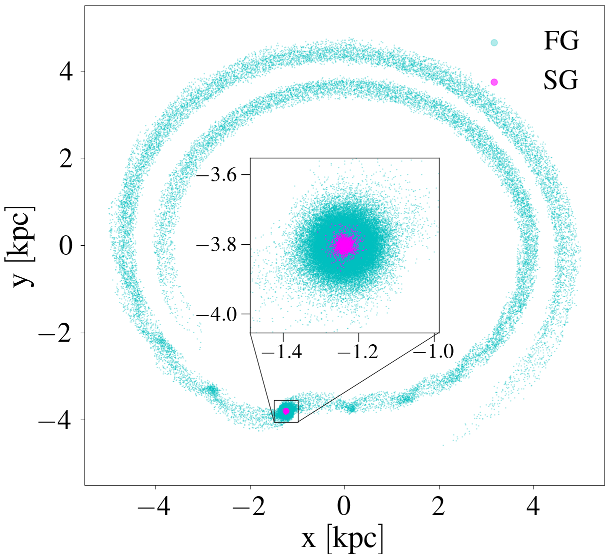
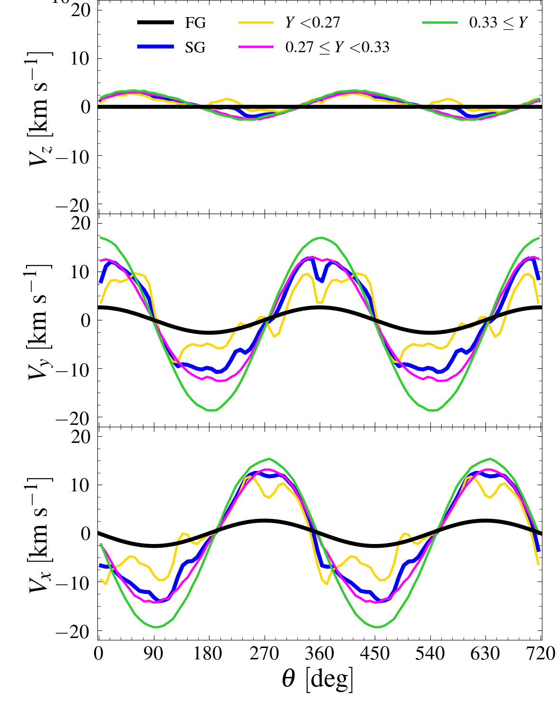
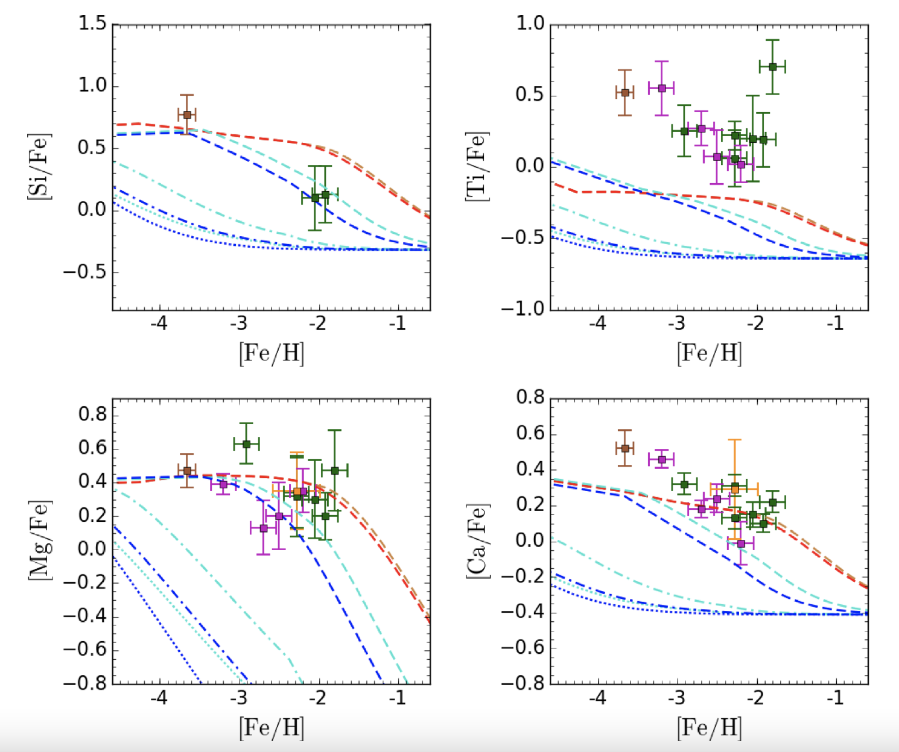

Invited talk at the EuroHPC Summit 2024
Publications
Below you can find my 1st author papers. For all the publications follow this link .
ORCID: 0000-0001-9936-0126

Multiple stellar population mass loss in massive Galactic globular clusters
Lacchin E. et al., 2024, A&A, 681, 45
Lacchin E. et al., 2024, A&A, 681, 45
The paper shows that a globular cluster composed of two generations of stars can lose more than 90% of their stars. Assuming an extended first generation and a low mass second generation, it is possible to match the mass, radius and fraction of second generation stars of observed globular clusters.
Shown in the figure is the cluster with the tidal tails created by its interaction with the Milky Way. Most of the stars that are lost at this time are first generation stars, as they are initial less bound to the cluster.
The role of rotation on the formation of second generation stars in globular clusters
Lacchin E. et al., 2022, MNRAS, 517, 1171
Lacchin E. et al., 2022, MNRAS, 517, 1171
The work shows that once we assume that first generation (FG) stars are rotating around the cluster centre, second generation (SG) stars, which are formed out of the first generation' ejecta plus external gas, are rotating much faster. Moreover, the second generation helium-enriched stars are orbiting the centre much faster than the helium poor-ones, in agreement with observations. This because helium rich stars are formed mainly out of rotating first generation' ejecta, while helium-poor ones are maily recycling external gas.
In the figure, Y indicates the helium mass fraction of SG stars. The velocity components of the various subgroups of the SG are displayed with yellow lines indicating the slowly rotating helium-poor SG and the green the fast-rotating helium-rich SG.


On the role of Type Ia supernovae in the second-generation star formation in globular clusters
Lacchin E. et. al, 2021, MNRAS, 506, 5951
Lacchin E. et. al, 2021, MNRAS, 506, 5951
The study highlights that Type Ia supernovae are not efficient in quenching the star formation, as previously thought, and that their explosions are significantly limiting the dilution of asymptotic giant branch stars ejecta with pristine gas, which is instead essential to reproduce the chemical composition of globular cluster' stars.
The figure shows the evolution of the density and temperature maps for one of the models. Type Ia supernova explosions are producing hot and rarefied bubbles that are expanding, limiting the star formation (new stars are displayed as white dots), which is happening in high density and cold regions.
Chemical evolution of ultrafaint dwarf galaxies: testing the IGIMF
Lacchin E. et al., 2020, MNRAS, 495, 3276
Lacchin E. et al., 2020, MNRAS, 495, 3276
In this paper, the more realistic Integrated Galactic Initial Mass Function (IGIMF) is found to predict too few massive stars at the metallicities and star fromation rates of ultrafaint dwarf galaxies with respect to canonical Salpeter initial mass function.
This implies that the models including the IGIMF are not able to reproduce the chemical patterns observed in ultrafaint dwarf galaxies. The figure highlights the differences between the models, the IGIMF in blue and Salpeter in red, with the observational data shown with their error bars (different colors are corresponding to different data samples).
